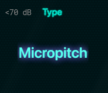
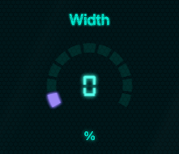

Modulation & Pitch
Cognate Hologram Manual
Version v1.01 · 06/04/2026
Modulation & Pitch
Version v1.01 · 06/04/2026
| Category | Modulation & Pitch |
| Channels | Stereo in / stereo out (sum-to-mono on Anagram — see note) |
| Version | 1.01 (06/04/2026) |
Cognate Hologram is a stereo spatialiser built specifically for bass. It takes a mono signal and gives it width and movement without losing the low-end solidity that makes bass sit in a mix. Four classic mono-to-stereo methods cover a range of characters, from subtle studio shimmer to lush synth-style unison; Low Mono anchors fundamentals in the centre so nothing wanders, and every mode collapses cleanly to mono with no phase cancellation or disappearing frequencies. Go beyond chorus. Still bass.

Full panel layout

Turns off the spatialiser and passes your bass straight through mono. Use it to A/B the effect against the dry signal, or to silence the processing between songs without removing Hologram from your preset.

Selects the underlying mono-to-stereo algorithm. Each one has a distinct character — start here and use Depth and Modulation to tune the flavour.

How much of the effect you're hearing. At low settings it's a gentle wideness around the dry signal; at the top it's the effect in full. Every mode stays usable across the full range — crank it without worrying about phase-wrecking the low end.

Controls how much internal movement the effect has — the amount of slow pitch or delay modulation inside the selected Type. Low settings are still and glassy; higher settings add organic motion and depth. Sweet spot is usually around the default; beyond that you start to hear the modulation as obvious wobble, which is sometimes the point.

A carefully tuned mid/side enhancer applied after the main effect, for when you need the stereo image to go further than the algorithm alone provides. At 0% the image is what the selected Type produces natively; as you increase, the side information is boosted relative to the mid, exaggerating the spread. Still mono-compatible at any setting.

Frequencies below this point are kept mono — they aren't widened, modulated, or stereo-enhanced. This is the trick that makes Hologram usable on bass: the fundamentals and body of every note stay rock-solid in the centre of the image, while only the harmonics get the stereo treatment. The default sits just above a typical low-B fundamental. Move it higher if the effect is still affecting the feel of your low end; move it lower for more wideness on deep notes at the cost of some image stability.

Output trim. Most of the Type + Depth combinations don't shift perceived loudness much, but turning Depth up can add a small amount of output energy — use Level to match the bypassed and engaged volumes.